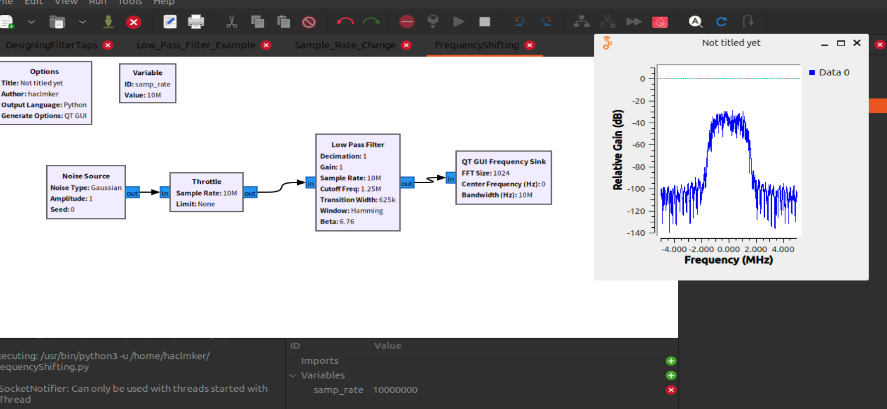
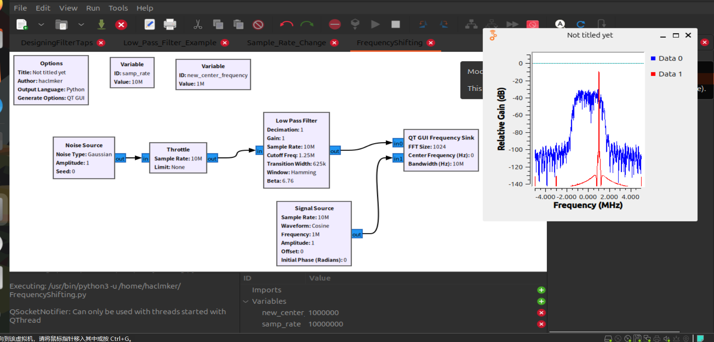
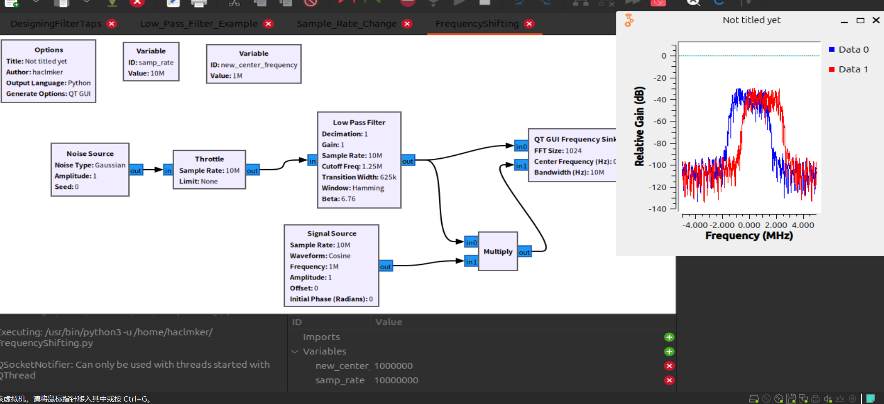
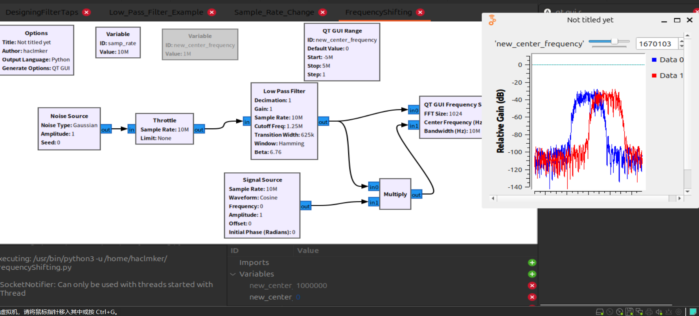

实践
我们知道频移可以使用多种方式进行实现，但是这篇文章使用的是 简单乘以复杂正弦波。
源信号
准备
首先使用一个10M噪声源加上一个低通滤波器组成一个源输入

然后我们加入一个复正弦波，之后用于频率偏移。
并添加一个变量new_center_frequency 值为1M
将signal Source输入(复正弦波)加入到QT GUI Frequency Sink，如果只有一个输入接口则双击它找到number of inputs改值即可。
根据上面逻辑，下面我们就要把Signal Source的Frequency改成new_center_frequency
然后我们运行一下就可以看到

我们可以清晰的看到复正弦波在1M左右。
转移
这一步我们要把乘法成分加入图中，从上面的公式推到就知道一个输入是低通滤波器的信号另一个肯定是1M的正弦波信号。最后输出给QT GUI Frequency Sink
Just like this

发现频率转移了，那么我们可以大胆猜测当值是负数时则向左偏移。
我们可以把Variable 1M的变量给disable，使用QT GUI Range进行调控。
就像这样
